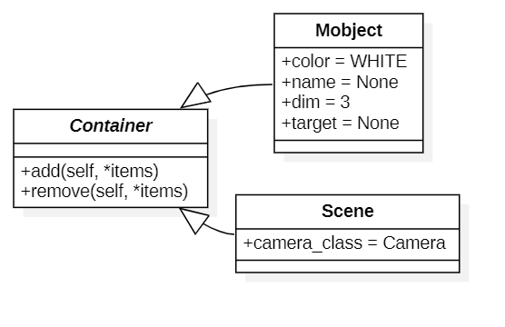
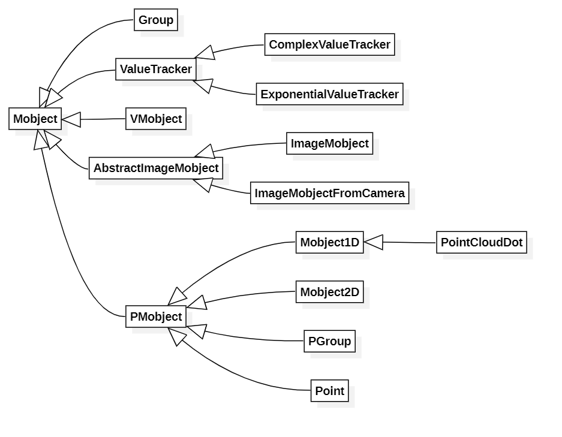
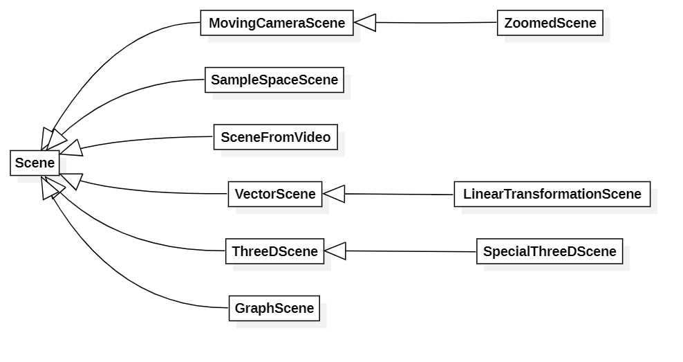
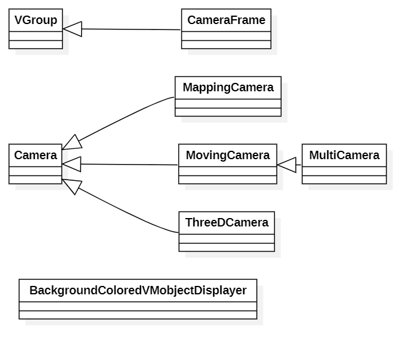
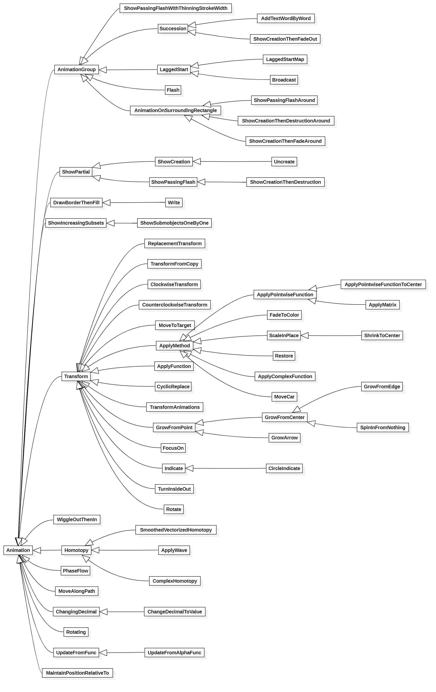

本文最后更新于：2020年6月30日 晚上
manim的整体结构解析
1. CONFIG是什么
几乎任何的类都会有一个神奇的字典,叫CONFIG,这个字典的所有键值对都会被赋予给类的属性,原因是因为所有的绘图类都是继承自Container类(位置:\manimlib\container\container.py),这个类在初始化的时候执行代码如下:
class Container(object):
def __init__(self, **kwargs):
digest_config(self, kwargs)
而digest_config在\manimlib\utils\config_ops.py:
def digest_config(obj, kwargs, caller_locals={}):
"""
Sets init args and CONFIG values as local variables
The purpose of this function is to ensure that all
configuration of any object is inheritable, able to
be easily passed into instantiation, and is attached
as an attribute of the object.
将初始化参数和CONFIG值设置为局部变量
此功能的目的是确保所有任何对象的配置都是可继承的，能够易于传
递到实例化并附加作为对象的属性。
"""
# Assemble list of CONFIGs from all super classes
# 将所有父类的CONFIG全部集中在static_configs
classes_in_hierarchy = [obj.__class__]
static_configs = []
while len(classes_in_hierarchy) > 0:
Class = classes_in_hierarchy.pop()
classes_in_hierarchy += Class.__bases__
if hasattr(Class, "CONFIG"):
static_configs.append(Class.CONFIG)
# Order matters a lot here, first dicts have higher priority
# 顺序很重要,字典的靠前的键值对有更高的优先级(即如果有相同的,覆盖后面的键值对)
# 优先级的处理是由merge_dicts_recursively函数处理的,具体自己读源代码
caller_locals = filtered_locals(caller_locals)
all_dicts = [kwargs, caller_locals, obj.__dict__]
all_dicts += static_configs
obj.__dict__ = merge_dicts_recursively(*reversed(all_dicts))
上面的英文解释已经很清楚了,一句话概括这个函数:将CONFIG这个字典中的内容变成类的属性.
值得注意的是:这个字典的一些键的值可以继续为CONFIG字典
2. 主要类图
Container类图:

Mobject类图:

其中的VMobject类图:

Scene类图:

Camera类图:

Animation类图:

3. 小结
时隔几个月,我又重新更新并看了一下manim的repo,这次我仅仅是粗略看了一下manim的结构,发现变化还是很明显的,相比几个月前的难以阅读,到现在几乎是很好阅读了.
我在此也对整个文件结构的所有类图内容扫描了一遍,发现整个代码里面几乎能想到的形式都有对应的类实现,有的类的继承实现甚至非常多余,因为就改了一两个参数,这几乎可以自己写,不过这manim本身目的就不是给公开使用,而是Grant Sanderson用来做视频的.
如果有时间我会对几个最基本的类进行解释,如果把最基本的类用法解释清楚接下来就可以很好的制作3b1b风格视频了.
本博客所有文章除特别声明外，均采用 CC BY-SA 4.0 协议 ，转载请注明出处！